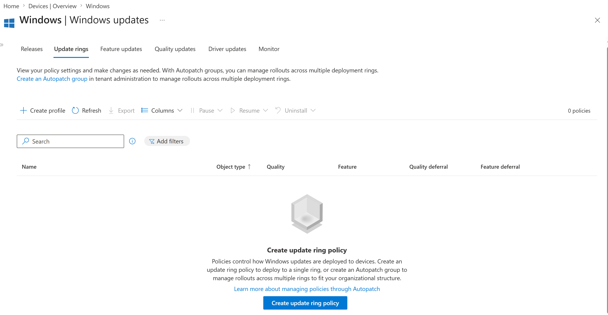
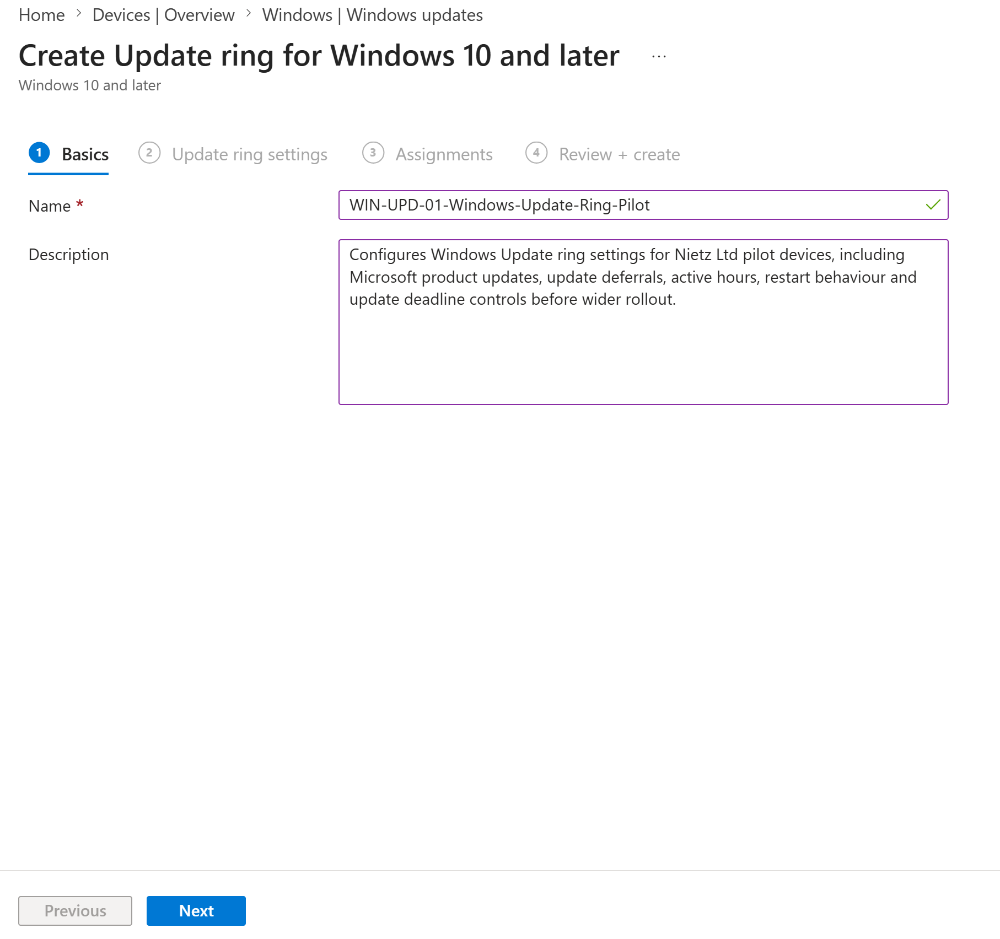
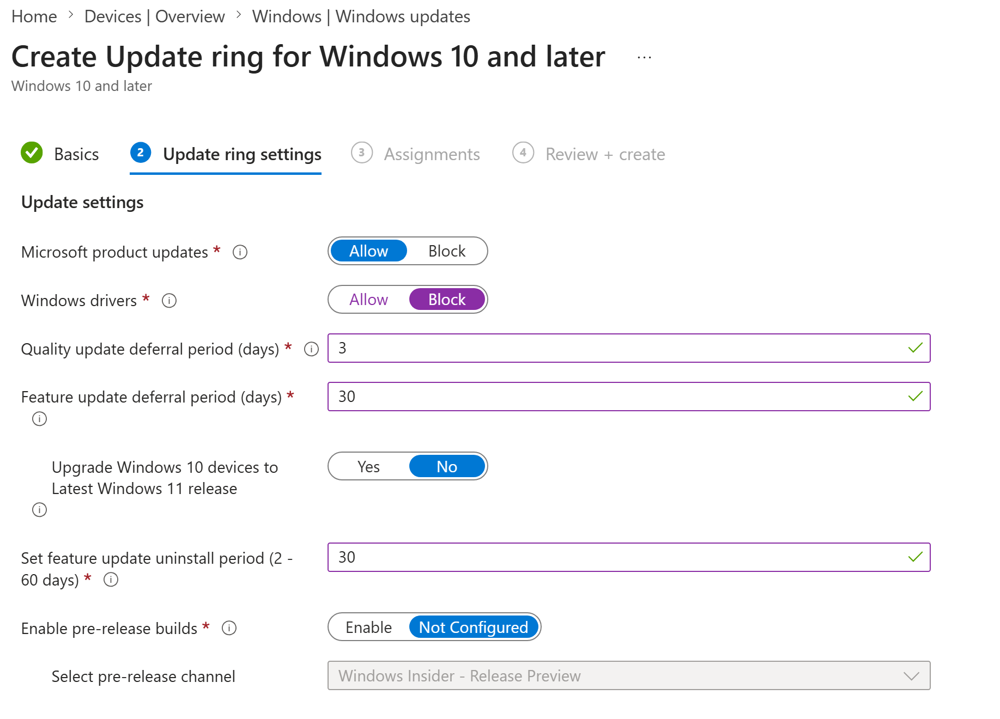
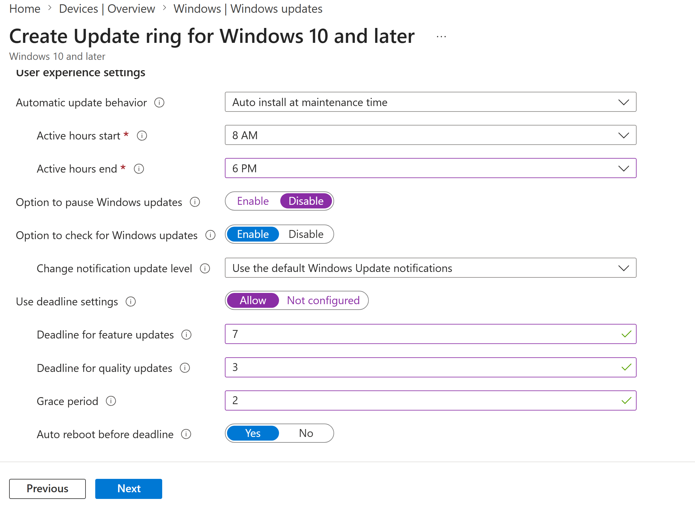
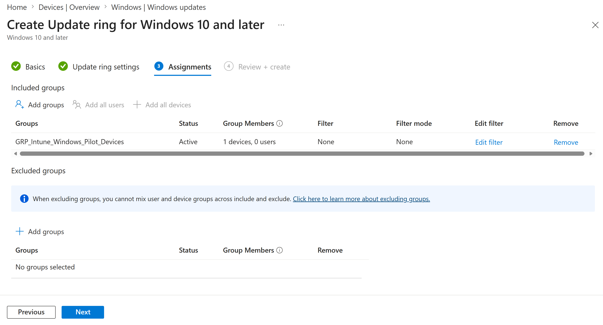
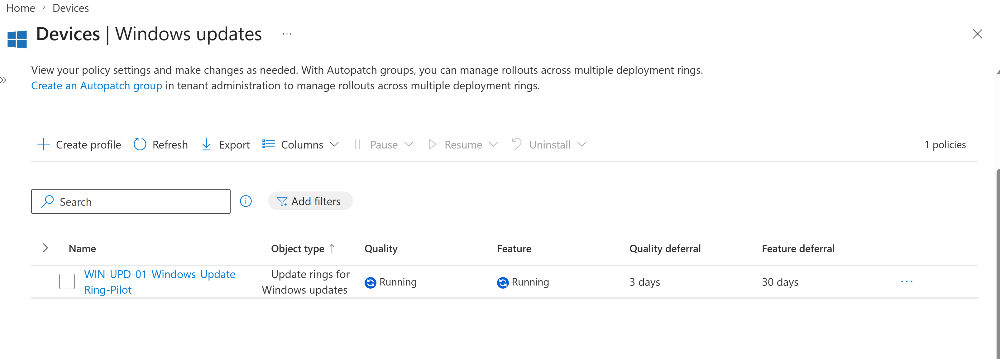
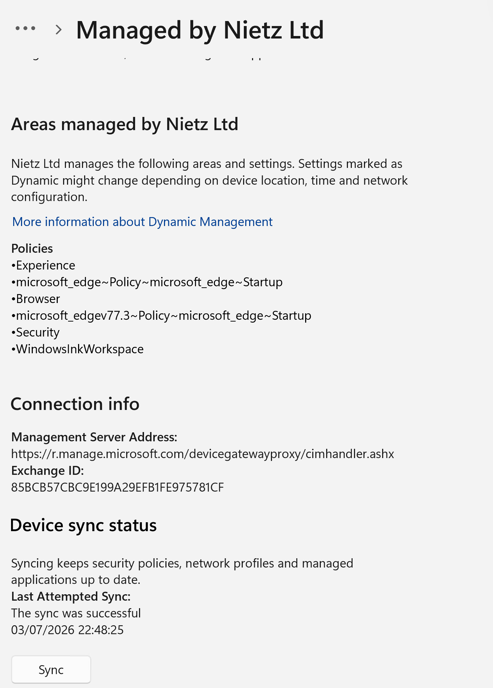
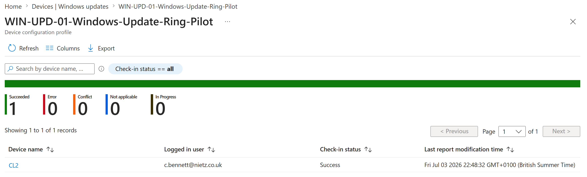

Lab 24: Windows Update Ring Pilot
Configured a Windows Update ring for the Intune pilot device group with controlled deferrals, active hours, restart deadlines and device-based targeting ahead of wider rollout.
Overview
This lab continued the MD-102 endpoint-management build by adding Windows Update for Business policy control through Microsoft Intune. The policy was created as a pilot update ring and assigned only to the existing Intune Windows pilot device group.
The lab focused on safe update governance rather than forcing an operating system update during the build. The final validation used Intune device check-in reporting to confirm that the update ring applied successfully to the CL2 pilot device.
I created WIN-UPD-01-Windows-Update-Ring-Pilot in the Intune Windows updates area. The update ring allowed Microsoft product updates, blocked driver updates, used a 3-day quality update deferral and a 30-day feature update deferral, and kept Windows Insider pre-release builds disabled.
I configured active hours from 8 AM to 6 PM, disabled the user option to pause updates, allowed users to check for updates, enabled default Windows Update notifications and applied deadline controls for quality and feature updates. The policy was assigned to GRP_Intune_Windows_Pilot_Devices, which contained the CL2 pilot device.
Objective
The objective was to create a controlled Windows Update ring for Nietz Ltd pilot devices, configure sensible quality and feature update deferrals, block driver updates, protect user active hours, enable deadline controls and validate successful policy deployment to CL2.
Environment
| Component | Value |
|---|---|
| Company | Nietz Ltd |
| Tenant admin | k.nietzold@nietz.co.uk |
| Management platform | Microsoft Intune |
| Policy type | Update ring for Windows 10 and later |
| Update ring policy | WIN-UPD-01-Windows-Update-Ring-Pilot |
| Assigned group | GRP_Intune_Windows_Pilot_Devices |
| Pilot device | CL2 |
| Logged-in pilot user | c.bennett@nietz.co.uk |
| Previous lab | Lab 23: Edge Security Baseline |
| Next lab | Lab 25: Feature Update Policy Windows 11 |
Configuration and Evidence
1. Update Rings Area Reviewed Before Creation
I opened the Windows Update rings area in Intune before creating the pilot update ring.

2. Pilot Update Ring Basics Configured
I named the update ring WIN-UPD-01-Windows-Update-Ring-Pilot and added a description explaining its pilot scope and update-management purpose.

3. Update Settings Configured
I configured the update settings to allow Microsoft product updates, block Windows driver updates, defer quality updates for 3 days and defer feature updates for 30 days.

4. User Experience and Deadline Settings Configured
I configured user experience settings to install updates during maintenance time, protect business active hours, disable update pausing and apply deadline controls for quality and feature updates.

5. Pilot Device Group Assigned
I assigned the update ring to GRP_Intune_Windows_Pilot_Devices so the policy targeted the CL2 pilot device before any wider deployment.

6. Update Ring Created
I confirmed that the update ring was created and visible in the Intune Windows updates list with the expected quality and feature deferral values.

7. CL2 Manually Synced
I manually synced CL2 from the Windows work or school account settings after assigning the update ring.

8. Deployment Status Confirmed
I reviewed Intune deployment reporting and confirmed that the update ring check-in status succeeded for CL2 with Chloe Bennett signed in.

Validation
The lab was validated when the update ring existed in Intune, showed the intended deferral settings, was assigned only to the Windows pilot device group, CL2 was manually synced, and Intune reporting showed one successful check-in for CL2 with no errors, conflicts or in-progress devices.
Key Technical Outcomes
Nietz Ltd now has a controlled pilot Windows Update ring for Intune-managed Windows devices. The configuration can be used to test update behaviour on CL2 before creating broader deployment rings for additional devices.
Summary
- Created
WIN-UPD-01-Windows-Update-Ring-Pilotin Microsoft Intune. - Allowed Microsoft product updates and blocked Windows driver updates.
- Configured a 3-day quality update deferral and 30-day feature update deferral.
- Configured active hours, user update options, notifications and update deadline controls.
- Assigned the policy only to
GRP_Intune_Windows_Pilot_Devices. - Manually synced CL2 after assignment.
- Confirmed successful Intune check-in status for CL2.